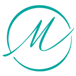
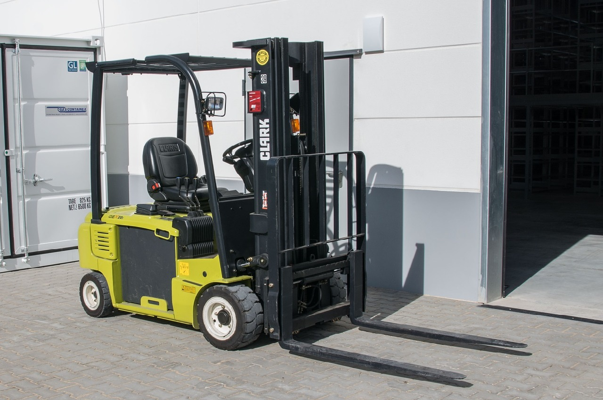
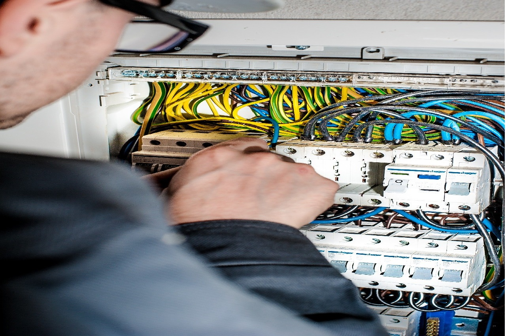

Bizimle çalışmayı tercih eden müşterilerimiz.
Onların memnuniyeti en önemli referansımızdır.

MEKOR TEKSTİL
DTEL
KOZLU ORMAN
CB COMPANY
Bizimle
Çalışmak
İstermisiniz
RBM MÜHENDİSLİK
RBM Mühendislik ve Danışmanlık olarak amacımız kalite yönetimini
iyileştirmek, memnuniyetini esas alarak güvenilir, doğru ve tarafsız hizmet vermektir.
Firmamız sertefikalı uzman kadrosu ile siz değerli müşterilerine kusursuz servis
hizmeti sunmaktadır.
Bizi seçen iş ortaklarımıza hizmet vermeyi görev edinmek başlıca
görevimizdir. Ürünlerimiz, çözümlerimiz, hizmetlerimizle sağladığımız güvenirlilik ve yüksek
iş ahlakımız ile
müşterilerin ilk tercihi olarak; müşterilerimiz için değer kazandıran bir şirket olmak.
İLETİŞİM
Kirazlı Merkez Cd. No:51, Kirazlı, 34210
Bağcılar / İstanbul
Topraklama ölçümü kapsamında toprak özdirenci (empadansın belirlenmesi)
ölçülmektedir.
-Topraklama ölçüm noktaları:
-Ana Dağıtım Panoları
-Tali Panolar
-Kombine priz kutuları
-Son Kullanıcı Noktaları
-Elektrikle çalışan makinalar ve ekipmanlar
TOPRAKLAMA ÖLÇÜMÜ RAPORU NASIL HAZIRLANIR ?
Muayenesi yapılacak noktaların İş Ekipmanlarının Kullanımında Sağlık ve Güvenlik
Şartları Yönetmeliğinde ve Ürünün
standart’ın da belirtilen kriterlere uygun olup olmadığı Teknik Uzman tarafından
ölçümü ve sonuçların değerlendirilmesi
yapıldıktan sonra bulunan sonuçlar rapora işlenerek Teknik Amirin onayı ile
rapor hazırlanmış olur.
TESİSAT UYGUNLUK ÖLÇÜMÜ NEDİR ?
Elektriksel tüm tesisatı muayenesi geniş kapsamlı bir terimdir.
Kaçak akım rölesi testleri.
Panolarda kapasitelerinin kontrolü
Panolardaki iletkenlerin bağlantı kontrolleri
Panoların dışarıdan gelecek elektriksel olmayan etkilere karşı korunmasının
kontrolü
Tek hat şeması ve ayrıntılı açıklamaların kontrolü
Sigorta kutularında ve panolarda bulunan kabloların mekanik etkilere karşı
kontrolü
Topraklama ve nötr baralarının kontrolü
Topraklama ölçüm ve kontrolleri
Çevrim empedansı ölçümleri
Termal kamera ile sıcaklık kontrolü
Kompanzasyon kontrollerini
Elektrik Tesisatı, Topraklama Tesisatı, Paratonerler arasında yer alan Elektrik
Tesisatı 6331 sayılı “ İş Sağlığı ve
Güvenliği Kanunu” uyarınca İş Ekipmanlarının Kullanımında Sağlık ve Güvenlik
Şartları Yönetmeliği’inde de belirtildiği
gibi Standartlarda süre belirtilmemişse yılda 1 defa veya daha fazla Elektrik
Tesisatı muayane ölçümü yapılması yasal
zorunluluktur.
TERMOGRAFİK MUAYENE (TERMAL KAMERA ) PANO RAPORU
TERMAL KAMERA ÖLÇÜMÜ NEDİR ?
Panolarda Termal kamera ölçümü, temassız pano üzerindeki ısı dağılımını ve
yüksek ısı veya deformasyonlardan dolayı
çıkabilecek muhtemel yangınların önüne geçilebilmesi için yapılan ölçümlerdir.
Panoların yüksek sıcaklıkları çıkmasının
nedeni tesisatın eski olması, yanlış montaj, yanlış kesitte kablo kullanılması,
işletmede çekilen akım arzının artması
gibi nedenler olabilir.
Tesislerinde arıza ve patlamaları önlemek için termal kamera ölçümleri
yapılmalıdır.
Elektrik Tesisatı, Topraklama Tesisatı, Paratonerler arasında yer alan Elektrik
Tesisatı kapsamı içinde Panoların termal
kamera görüntüleri 6331 sayılı “ İş Sağlığı ve Güvenliği Kanunu” uyarınca İş
Ekipmanlarının Kullanımında Sağlık ve
Güvenlik Şartları Yönetmeliği’inde de belirtildiği gibi Standartlarda süre
belirtilmemişse yılda 1 defa veya daha fazla
Topraklama ölçümü yapılması önerilir.
PARATONER ÖLÇÜMÜ VE RAPORU
PARATONER ÖLÇÜMÜ NEDİR ?
Paratoner: Paratoner (yıldırımsavar), bir yapıyı veya yükseltiyi muhtemel
yıldırım hasarlarından koruma amaçlı
tasarlanan metal iletken uzun direktir. Yıldırımlar çarpacağı bölgedeki en
yüksek ve sivri uca çarpma eğilimi
göstermektedirler.
Ayrıca paratonerler uçakların kanatlarında, trenlerde, elektrik direktlerinde ve
metal taşıma araçlarında rastlamak
mümkündür.
Elektrik Tesisatı, Topraklama Tesisatı, Paratonerler arasında yer alan Paratoner
(Yıldırımsavarlar) 6331 sayılı “ İş
Sağlığı ve Güvenliği Kanunu” uyarınca İş Ekipmanlarının Kullanımında Sağlık ve
Güvenlik Şartları Yönetmeliği’inde de
belirtildiği gibi Standartlarda süre belirtilmemişse yılda 1 defa veya daha
fazla Paratoner muayanesi yapılması yasal
zorunluluktur.
JENERATÖR NEDİR ?
Elektriğin olmadığı veya elektriğin kesildiği durumlarda devreye girerek elektrik
ihtiyacını karşılayan mekanik enerjiyi
elektrik enerjisine çeviren cihazdır.
JENERATÖR PERİYODİK KONTROLÜ HANGİ SIKLIKLA YAPILMALIDIR ?
Elektrik Tesisatı, Topraklama Tesisatı, Paratonerler arasında yer alan Jeneratör
6331 sayılı “ İş Sağlığı ve Güvenliği
Kanunu” uyarınca İş Ekipmanlarının Kullanımında Sağlık ve Güvenlik Şartları
Yönetmeliği’inde de belirtildiği gibi
Standartlarda süre belirtilmemişse yılda 1 defa veya daha fazla Jeneratör
muayenesi yapılması yasal zorunluluktur.
Elektrik Tesisatı, Topraklama Tesisatı, Paratonerler arasında yer alan Jeneratör
6331 sayılı “ İş Sağlığı ve Güvenliği
Kanunu” uyarınca İş Ekipmanlarının Kullanımında Sağlık ve Güvenlik Şartları
Yönetmeliği’inde de belirtildiği gibi
Standartlarda süre belirtilmemişse yılda 1 defa veya daha fazla Jeneratör
muayenesi yapılması yasal zorunluluktur.
TRAFO NEDİR ?
Transformatör(trafo), iki veya daha fazla devre arasındaki elektrik enerjisi
aktarımını elektromanyetik indüksiyonla
sağlayan bir sistemdir.
Trafo doğru akım devrelerinde değil, alternatif devrelerde kullanılır.
Genellikle bir elektrik devresindeki akım ve
gerilimi yükseltme ve düşürme, elektrik enerjisinin aktarımı ve dağıtımı gibi
amaçlar için kullanılırlar.
Ülkemizde:
Alçak gerilim şebekeleri 220 V ve 380 V,
Orta gerilim şebekeleri 10 kV, 15 kV ve 33 kV ,
Yüksek gerilim ise 66 kV ve 154 kV ve
Çok yüksek gerilime sahip şebekeler de 380 kV kullanmaktadırlar.
Özellikle elektrik enerjisinin elde edildiği yerden uzaklara aktarılmasıdır.
Bunun sebebi yüksek akımla iletme işleminin
çok ciddi seviyede güç kayıplarına yol açmasıdır. Güç kayıplarının önüne geçmek
için iletme işlemi esnasında gerilim
yükseltilir ve akım düşürülür.
Elektrik Tesisatı, Topraklama Tesisatı, Paratonerler arasında yer alan Trafo 6331
sayılı “ İş Sağlığı ve Güvenliği
Kanunu” uyarınca İş Ekipmanlarının Kullanımında Sağlık ve Güvenlik Şartları
Yönetmeliği’inde de belirtildiği gibi
Standartlarda süre belirtilmemişse yılda 1 defa veya daha fazla Trafo muayenesi
yapılmalıdır.
Elektrik Tesisat Uygunluk Rapor
Paratoner Ölçüm ve Muayenesi
Jeneratör Periyodik Muayenesi
Topraklama Ölçüm ve Raporu
Termal Kamera Pano Muayenesi
Mekanik

KALDIRMA İLETME EKİPMANLARI
HAREKETLİ YÜKLEME RAMPASI PERİYODİK KONTROLÜ
İSTİF MAKİNASI PERİYODİK KONTROLÜ
KALDIRMA PLATFORMU / MOBİL İSKELE
TRANSPALET PERİYODİK KONTROLÜ
KONVEYÖR (BANT) PERİYODİK KONTROLÜ
YÜK ASANSÖRÜ
İŞ MAKİNELERİ
BASINÇLI KAPLAR
KALORİFER KAZANI PERİYODİK KONTROLÜ
HİDROFOR PERİYODİK KONTROLÜ
BUHAR JENERATÖRÜ VE KAZANI PERİYODİK KONTROLÜ
KIZGIN YAĞ KAZANI PERİYODİK KONTROLÜ
KOMPRESÖR – HAVA TANKI PERİYODİK KONTROLÜ
BASINÇ KAZANI / ÜTÜ KAZANI
YANGIN TESİSATI VE EKİPMANLARI
YANGIN SÖNDÜRME SİSTEMLERİ PERİYODİK MUAYENESİ HANGİ SIKLIKLA YAPILMALIDIR ?
Yangın söndürme sistemleri 6331 sayılı “ İş Sağlığı ve Güvenliği Kanunu” na
bağlı 25.04.2013 tarih ve 28628 sayılı Resmi
Gazetede yayınlana İş Ekipmanlarının Kullanımında Sağlık ve Güvenlik Şartları
Yönetmeliği ile iş ekipmanlarının
periyodik kontrol ve muayene işlemleri zorunlu hale gelmiştir.
Yönetmelikte yılda 1 defa veya daha fazla yangın söndürme sistemlerinin
periyodik kontrollerinin yapılması yasal
zorunluluktur.
HAVALANDIRMA TESİSATI
HAVALANDIRMA TESİSATI NEDİR ?
Havalandırma tesisatı kendi içinde sınıflara ayrılmalıdır.
Endüstriyel amaçlı tasarlanan havalandırma sistemleri
Restoran ve mutfak havalandırma sistemleri
Konfor amaçlı havalandırma sistemleri
Hijyenik havalandırma sistemleri
Endüstriyel amaçlı tasarlanan havalandırma sistemleri, patlayıcı parlayıcı ve
zehirli gazları uzaklaştırmak, kötü ve
baskın kokuları yok etmek, çalışan sağlığını korumak daha temiz ve sağlıklı hava
koşullarında çalışmak için kullanılır.
Havalandırma sistemleri 6331 sayılı “ İş Sağlığı ve Güvenliği Kanunu” na bağlı
25.04.2013 tarih ve 28628 sayılı Resmi
Gazetede yayınlana İş Ekipmanlarının Kullanımında Sağlık ve Güvenlik Şartları
Yönetmeliği ile havalandırma sistemlerinin
periyodik kontrol ve muayene işlemleri zorunlu hale gelmiştir. Yönetmelikte
yılda 1 defa havalandırma sistemlerinin
periyodik kontrollerinin yapılması yasal zorunluluktur.
MAKİNE TEZGAH KONTROLÜ
MAKİNE TEZGAH KONTROLÜ NEDİR ?
Makina imalatında veya son kullanıcının ihtiyacı olan parçaları üretmek için
kullanılan tezgahlardır. Bu parçaları
farklı mekanik hareketlerle yapabilmektedirler. Bu tezgahların temel güvenlik
kriterleri benzerlik arz ederken makinanın
fonksiyonuna göre muayane TSE kontrol kriterleri değişkenlik göstermektedir.
Kaldırma iletme ekipmanları arasında yer alan Makine Tezgahları 6331 sayılı “ İş
Sağlığı ve Güvenliği Kanunu” uyarınca
İş Ekipmanlarının Kullanımında Sağlık ve Güvenlik Şartları Yönetmeliği’inde de
belirtildiği gibi yılda 1 defa veya daha
fazla Makine Tezgahının periyodik kontrollerinin yapılması yasal zorunluluktur.
İş Hijyeni ve Ortam Ölçümleri
GÜRÜLTÜ ORTAM MARUZİYET ÖLÇÜMÜ NEDİR ?
Herhangi bir işyerindeki çalışanın maruz kaldığı gürültünün A-ağırlıklı eşdeğer
basınç seviyesinin 1 çalışma günü (8
saatlik) referans alınarak hesaplanmasıdır.
Gürültü insan yaşamını etkileyebilecek işitsel ve psikolojik problemler
yaratacabilecek ciddi bir dış etmendir. Devamlı
yüksek derecede gürültüye maruz kalan insanların işitme problemleri yaşadıkları
ve sağırlığa kadar yol açabilmektedir.
Bu yüzden gürültü ölçümleri gerek iş güvenliği gerekse insan sağlığından dolayı
önemli bir konudur.
Gürültü ölçümü, bulunan ortamda gürültü birimi olan desibel (dB) olarak gürültü
düzeyinin ölçülme işlemine
denilmektedir.
Mevzuatta ortam gürültü ölçümü sıklığı ile ilgili bir bilgi yer almamaktadır. Bu
yüzden İş veren, iş hijyeni ölçüm,
analiz ve testlerini risk değerlendirmesine bağlı olarak yaptırmaktadır.
Ayrıca ortam gürültü ölçümü sonrasında işletmedeki gürültü ses kaynaklarının
eklenmesi (yeni makina alınması vb.) , iş
yapış süreçlerinde değişiklik olduğunda ortam gürültü ölçümü tekrarlanmalıdır.
Genellikle ortam gürültü ölçümü çok
tehlikeli sınıf işletmelerde 2 yılda bir, tehlikeli sınıf işletmelerde 4 yılda
bir, az tehlikeli sınıf işletmelerde 6
yılda bir yeniden yapılması gerekir. Ortam gürültü ölçümü sürelerinin iş
güvenliği uzmanı ve iş yeri hekiminin uygun
görmesi halinde daha öne çekilebilir.
TOZ ORTAM – MARUZİYET ÖLÇÜMÜ NEDİR ?
Tesisin belirlenen noktalarında solunabilir veya toplam toz ölçümünün
yapılmasıdır.
Toz ortam ölçümleri çalışanların sağlığını tehdit eden partiküllerin seviyesini
ve tespiti için yapılmaktadır. Toz
ölçümü döküm, maden ve diğer metalürjik faaliyetler, cam, gemi tersaneleri, taş
nesneleri üretimi, kimya ve ilaç
endüstrisi, ağaç endüstrisi gibi yerlerde yapılmaktadır.
Mevzuatta Toz Ortam – Maruziyet ölçümü sıklığı ile ilgili bir bilgi yer
almamaktadır. Bu yüzden İş veren, iş hijyeni
ölçüm, analiz ve testlerini risk değerlendirmesine bağlı olarak yaptırmaktadır.
Ayrıca iş yeri ortamının ya da işin gereği olarak kişisel maruziyetlerde
değişiklik olduğunda ölçüm tekrarlanmalıdır.
Genellikle Toz Ortam Maruziyet Ölçümü çok tehlikeli sınıf işletmelerde 2 yılda
bir, tehlikeli sınıf işletmelerde 4 yılda
bir, az tehlikeli sınıf işletmelerde 6 yılda bir yeniden yapılması gerekir. İş
güvenliği uzmanı ve iş yeri hekiminin
uygun görmesi halinde daha öne çekilebilir.
Gürültü Ölçümü
Gürültü Maruziyet Ölçümü
Toz Ölçümü
Toz Maruziyet Ölçümü
Titreşim Maruziyet Ölçümü
İşyeri Ruhsat (Makina Yerleşim) Projesi
İşletmelerin çalışma ruhsatı edinebilmesi için ruhsat yönetmeliği kapsamında
müesseselerin 3 takım işyeri ruhsat projesi
(Makina, Yerleşim, Elektrik Tesisat ) istenmektedir.
İş yeri ruhsat projeleri, konusunda uzman Elektrik Mühendisleri tarafından
hazırlanmakta ve Elektrik Mühendisleri Odası
(EMO) yetki belgeli SMM mühendislerimiz tarafından onaylanmaktadır.
Kuvvetli Akım Elektrik Projelerinin Tasarımı ve Çizimi
Priz Tesisatı Projesi
Topraklama Sistemi Projesi
Alçak Gerilim Enerji Dağıtım Sistemi Projesi
Jeneratör Projesi
Çevre Aydınlatma Projesi
Kompanzasyon Tesisatı Projesi
Kesintisiz Güç Kaynağı (KGK) ( UPS ) Projesi
Özel Sistem ve Tasarımların Projeleri.
Aydınlatma Sistemi Projesi
Yıldırımdan Korunma (Paratoner Faraday Kafesi) Sistemi Projesi
Yüksek Gerilim ve Transformatör Merkezi Tesisatı Projesi
Cephe Aydınlatma Projesi
Güvenlik Tesisatı Projesi
Kesintisiz Güç Kaynağı (KGK) ( UPS ) Projesi
Zayıf Akım Elektrik Projelerinin Tasarımı ve Çizimi
Kamera Yerleşim (CCTV) Projesi
Hırsız İhbar ve Güvenlik Sistemi Projesi
Telefon Sistemi Projesi
Kartlı Geçiş ve Geçiş Kontrol Sistemi Projesi
Diyafon Sistemi Projesi
Yangın Algılama ve Uyarı Sistemi Projesi
Data – Network Sistemi Projesi
Seslendirme ve Anons Sistemi Projesi
Televizyon ve Uydu Sistemi Projesi
Özel Sistem ve Tasarımların Projeleri
Elektrik Pano Projelerinin Tasarımı ve Çizimi
Elektrik Dağıtım Panosu Tasarımı ve Proje Çizimi
Kolon Şemaları ve Tek Hat Projelerden Üç Hat Pano Projelerinin Oluşturulması
Elektrik Pano Görünüş Projelerinin Çizimi
Ana Dağıtım Panosu Projesinin Tasarımı ve Proje Çizimi
Motor Kumanda Kontrol Panosu (MCC) Projesinin Tasarımı ve Proje Çizimi
Özel Pano Projelerinin Tasarımı ve Proje Çizimi.
Yükleme Cetvellerinin Hazırlanması
Şebeke ve Kumanda Hatları için Elektrik Panolarının Tasarımı ve Proje Çizimi
Elektrik Panosu Yerleşim Planı Oluşturulması
Aydınlatma Panosu Projesinin Tasarımı ve Proje Çizimi
Kompanzasyon Panosu Projesinin Tasarımı ve Proje Çizimi
İsteğe bağlı özel projelerin tasarımı ve çizimi için iletişime geçiniz.
Belgelendirme

SEDEX DENETİMİ
SEDEX, tedarik zincirinde olan kuruluşların etik ticaret konusunda gelişmesini
hedefleyen bir ticaret topluluğudur.
Diğer bir tanımıyla tedarik zincirlerinin performanslarını iyileştirmelerine
yardımcı olmak için tasarlanmış bir denetim
sistemdir. SEDEX Belgesi almak için tedarikçi veya satın alan taraf fark
etmeksizin, şirketlerin uyması gereken belli
başlı kriterler mevcuttur. Bu kriterlerin genel adı SMETA’dır. SEDEX Belgesi
için temeli oluşturan SMETA, amacına uygun
olarak, kendi içinde de sürekli gelişmektedir. Bu sayede, zamanın getirdiği
problemlere ve ortaya çıkan gelişmelere göre
güncellenir.
SEDEX Belgesinin amacı tehlikeleri minimize etmek, firmanın imajını korumak ve
tedarik halkası faaliyetlerini iletmek ve
destek olmak için bir çözümdür. Etik tedarik halkasında bilgi paylaşımı için en
büyük ve en önemli ortak bir
platformdur. Sorumlu iş uygulamaları hakkındaki verileri depolar ve etik
performans bilgilerinin birden fazla Marka ve
Müşteriyle paylaşılmasına olanak tanır. Katılımcı firmalar Sedex sistemine ortak
bir veri tabanına bağlanıp çalışmalara
katılıp üyelerle irtibata geçebilirler. Etik sosyal uygunluk incelemelerine
giren şirketlerin analiz raporları diğer üye
şirketlere de açıktır ve bu yolla tedarik halkaları meydana getirilmektedir.
SEDEX Belgesi almak amacıyla geçirilecek denetimler, SMETA (Sedex Members Ethical
Trade Audit) adı verilen etik ticaret
denetim kriterleri baz alınarak gerçekleştirilmektedir. Bu noktada, SEDEX
Belgesi danışmanlığında verilen bilgiler,
eğitimler ve yapılan toplantıların odak noktası SMETA şartları olacaktır.
SEDEX Denetimi Uygulaması
Sedex Denetimi, onaylı denetim firmaları tarafından gerçekleştirilir. Bu denetim
sonucunda Sedex belgesi verilmez, Sedex
belgesi yerine Sedex numarası verilir. Denetimde Sedex standartlarına uygunluk
denetlenir. Denetim, firmanın sosyal
sorumluluk alanındaki başarısını ya da başarısızlığını ortaya çıkarır. Denetim,
Sedex dökümantasyon denetimi, insan
kaynakları uygulamaları, iş güvenliği uygulamaları ve uluslararası çalışma
standartları uygulamaları üzerinden planlanır
ve denetlenir. Ortaya çıkan uygunsuzluklar Sedex sistemine online rapor olarak
yüklenir. Böylece tedarikçi firmalar,
satın alma yapmak istediği firmaların Sedex numarası/kodu ile sisteme girerek,
satın alma yapacakları firmanın Sedex
standartlarına uygun olup olmadıklarını inceleyebilirler.
Sedex denetimi yapan bazı onaylı kuruluşlar; İntertek, AAG Members, Accordia,
ALGI, Bureau Veritas, KSSA, Level Works,
TÜV SÜD, TÜV Rheinland, SMT Globa, SGS, Sercura Ltd, Partner Africa, WRAP,
Wieta.
SEDEX denetiminin faydaları aşağıdaki gibi sıralanabilir;
SEDEX Denetimleri raporları, Sosyal Uygunluk Denetimleri için yaygın olarak
kabul edilebilir tek bir format sağlayarak
zincir denetimi çoğaltmayı hızlandırır.
SMETA Standardına göre Sosyal Uygunluk Denetimleri, şirketlerin tedarik
zinciri ile ilgili bilgileri etkin bir şekilde
paylaşmalarını ve yönetmelerini sağlar.
SMETA Denetimleri, tedarik zincirindeki etik ticaret programlarını
geliştirir.
SMETA Standardına göre Sosyal Uygunluk Denetimleri ile sosyal sorumluluk ve
sürdürülebilirlik riskini azaltır.
Markalar ve alıcılar, tedarikçilerin sosyal uygunluk denetimlerini SEDEX
veri tabanında görüntüleyebilir ve
paylaşabilir.
SEDEX, uluslararası ölçekte kabul görmüş ve küresel olarak uygulanabilir denetim
formatları sunmaktadır. Ayrıca,
müşterilerinize ve ortaklarınıza etik ve sosyal açıdan sorumlu iş prensiplerine
bağlı olduğunuzu göstererek imajınızı
geliştirmektedir.
BSCI DENETİMİ
Üretici veya tedarikçi ülkelerde sosyal standartları ve performansları izlemek
için oluşturulmuş olup
standartlaştırılmış bir Avrupa yaklaşımıdır. 2003 yılında Dış Ticaret Birliği
tarafından global tedarikçi zincirinde
firmaların çalışma şartlarını iyileştirmek ve uyum sağlamak amacı ile
oluşturulmuştur. Yerel kanunların yanı sıra,
Uluslararası Çalışma Örgütü’nün çalışma standartları ve Birleşmiş Milletler
İnsan Hakları Sözleşmesi gibi bazı diğer
önemli uluslararası düzenlemeleri temel almaktadır. Bu girişim tedarikçilerin
sosyal performansının sürekli
attırılmasını, dünya çapında fabrikalardaki çalışma koşullarının
iyileştirilmesini hedefler.
Oluşturulan BSCI kapsam çalışmaları 2004 yılında tamamlanmıştır ve sistem o
zamandan beri dünya genelinde uygulanmaya
başlamıştır. Çok hızlı bir büyüme gerçekleştiren BSCI kapsamına, 2011 yılında,
sürdürülebilirlik dahil edilmiş ve daha
güçlü bir organizasyon yapısı benimsenmiştir. BSCI denetimi tüm tedarikçilerin
ve belirlenen taşeronların merkez
şirketine olan çalışma etiğine ve kalite sistemine bağlılığını gösterir. BSCI
denetiminde şirketler BSCI veri tabanını
kontrol ederek denetim sonuçlarına ulaşabilirler. BSCI tedarikçileri,
denetimlerini tamamladıktan sonra etik denetim
prosedürlerini ve kalite sistemini geliştirmeyi hedefler. Tedarikçi kuralları,
her türlü ürün ile birlikte her boyuttaki
firmalar için uygulanabilir. BSCI sosyal sorumluluğun yanı sıra iş ve sosyal
uyumluluk kurallarını gerektirdiğinden
markaların satın alma kararlarında doğrudan etkili olmaktadır.
BSCI Belgesinin Faydaları Nelerdir?
BSCI sistemine katılan işletmeler;
Tedarik zincirindeki çalışma koşullarını iyileştirmek için etkili ve köklü
bir sistem kullanmış olur.
Tedarik zincirinin tutarlı bir şekilde izlenmesini sağlamak için çok çeşitli
dillerde hazırlanan kapsamlı denetim
araçlarına erişebilirler.
BSCI onaylı uluslararası denetim şirketleri ağına erişerek yüksek kalitede
denetim hizmetleri alabilirler.
Denetim verilerinin bir arada tutulduğu tedarikçi veri tabanına
ulaşabilmekte, bu şekilde aynı işyerinde yapılan birden
fazla denetimden kaçınarak zaman ve para tasarrufu yapabilirler.
Sosyal uyumluluk alanındaki en iyi uygulamaları paylaşmak ve daha fazla
geliştirme imkanı sağlar.
Doğrudan BSCI sisteminin gelişimine katılma imkanı sağlamaktadır.
Sosyal uygunluk alanındaki haberler ve olaylar hakkında düzenli bilgi sahibi
olurlar.
INDITEX ONAYI VE DENETİMİ
Dünyanın en büyük moda distribütörlerinden biri olan Inditex, 1963 yılında küçük
bir atölyede moda serüvenine
başlamıştır. Bugüne kadar çok önemli firmaları bünyesine katan firma, dünyada
perakende satış yapan en büyük moda
topluluğundan biridir. Bünyesine kattığı 8 marka; Zara, Pull & Bear, Massimo
Dutti, Bershka, Stradivarius, Oysho, Zara
Home ve Uterqüe olarak sıralanabilir.
Dünyadaki birçok moda perakendecilerinden biri olan Inditex, çevrimiçi platformu
veya 96 pazardaki 7000’in üzerinde
mağazası ile 202 pazarda satış yapmaktadır. Şirketin tüm tedarikçileri ve
üreticileri, 2001´den beri sürdürülebilirlik
taahhüdünün temel taşı olan Üreticiler ve Tedarikçiler için Davranış Kuralları
içerisinde belirtilen katı şartlara uymak
zorundadır. Bu kurallar, insan haklarının korunmasına ve uluslararası iş
sözleşmelerinin tanınmasına öncelik veren
sorumlu yönetim konusundaki belirli standartları ortaya koymaktadır. INDITEX ‘in
şirket kültürü genel olarak insan ve iş
haklarına saygıyı esas almaktadır. Bu çerçevede oluşturulan kurallar, şirketin
üretici ve tedarikçileri tarafından
karşılanması gereken asgari etik ve sorumlu davranış standartlarını
tanımlamaktadır.
INDITEX Belgesi
Inditex Belgesi bir diğer adıyla Zara Inditex Belgesi; Inditex denetimlerini
başarıyla tamamlayan firmanın sahip olduğu
belge ya da belgelerdir. Bu belge veya belgeler, denetim sonuçlarını gösteren
evraklar ya da denetim firmasının verdiği
evraklardan oluşabilir. Inditex moda topluluğu bünyesinde 8 büyük firma
bulundurmaktadır. Inditex denetimlerini
başarıyla tamamlayan ve gerekli onayı alan firmalar bu 8 markaya üretim
yapabilir.
Inditex denetim belgelendirme işlemi doğrudan Inditex’in görevlendirdiği kişiler
tarafından ya da üçüncü taraf firmalar
tarafından yapılabilir.
INDITEX denetimleri diğer tüm sosyal uygunluk denetimleri gibi İş Güvenliği
Yönetmeliklerine göre kurulur. INDITEX ‘in
davranış kurallarının ana başlıkları şöyledir:
Zorunlu çalıştırmama
Çocuk işçi çalıştırmama
Ayrımcılık yapmama
Örgütlenme ve Toplu Pazarlık Özgürlüğü
Sert veya insanlık dışı muamele olmaması
Güvenli ve Hijyenik çalışma koşulları
Ücret ödemelerinin düzenli olması
Çalışma saatlerinin düzenli olması
Düzenli İstihdam
Üretimin izlenebilirliği
İş Sağlığı ve Ürünlerin Güvenliği
Bilginin gizliliği ilkesinden taviz verilmemesi
Çevre bilincinin oluşturulması.
INDITEX Belgesi Denetim Sürecinde Dikkat Edilmesi Gereken Hususlar:
İşletmede hiçbir koşulda 16 yaşından küçük olan kişi veya kişiler
çalıştırılmamalı,
Oturma ve çalışma izni olmayan yabancı uyruklu personel çalıştırılmamalı,
İşletmede çalışan personelin hiçbirine asgari ücret altı ödeme yapılmamalı,
İşletmede hiçbir koşulda SGK veya vergi borcu olmamalı,
İşletme, hiçbir Inditex ürününü hiçbir proses için Inditex onayı olmayan bir
işletmeye çıkmamalı.
Destek almak için bizimle iletişime geçiniz
EĞİTİM
EĞİTİMLERİMİZ
Köprülü Vinç Operatörü
Mobil Vinç Operatörü
Forklift Operatörü
CNC Takım Tezgahları Mekanik Servis Görevlisi
NC/CNC Takım Tezgâhları Elektrik/Elektronik Servis Görevlisi